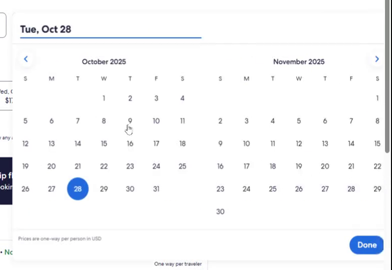

screenshot_0 · full
[1920, 990] → [1920, 990] · 保留像素 100.0% · 场景 0


坐标：[0, 0, 1920, 990] · 原因：first_screenshot
算法版本：experimental_theme_aware_per_step_v2。仅用于预览，生成流程未修改。
返回任务总览 · 查看全部步骤拼图 · 查看算法判断 JSON
左侧为原图预览和选区（绿色：裁剪；蓝色：保留整图），右侧为此算法的输出预览；实验版尚未用于生成。点击图片查看原尺寸；预览自动缩放。像素减少比例不等于 token 减少比例。
[1920, 990] → [1920, 990] · 保留像素 100.0% · 场景 0
坐标：[0, 0, 1920, 990] · 原因：first_screenshot
[1920, 990] → [1920, 990] · 保留像素 100.0% · 场景 0
坐标：[0, 0, 1920, 990] · 原因：changes_spread_keep_full
[1920, 990] → [784, 869] · 保留像素 35.8% · 场景 0
坐标：[1136, 121, 1920, 990] · 原因：localized_change
[1920, 990] → [1920, 990] · 保留像素 100.0% · 场景 0
坐标：[0, 0, 1920, 990] · 原因：changes_spread_keep_full
[1920, 990] → [785, 541] · 保留像素 22.3% · 场景 0
算法输出预览

坐标：[1135, 95, 1920, 636] · 原因：localized_change
[1920, 990] → [1048, 660] · 保留像素 36.4% · 场景 0
坐标：[872, 95, 1920, 755] · 原因：localized_change
[1920, 990] → [1920, 990] · 保留像素 100.0% · 场景 0
坐标：[0, 0, 1920, 990] · 原因：changes_spread_keep_full
[1920, 990] → [1178, 532] · 保留像素 33.0% · 场景 0
坐标：[742, 95, 1920, 627] · 原因：localized_change
[1920, 990] → [1920, 990] · 保留像素 100.0% · 场景 0
坐标：[0, 0, 1920, 990] · 原因：changes_spread_keep_full
[1920, 990] → [1920, 990] · 保留像素 100.0% · 场景 0
坐标：[0, 0, 1920, 990] · 原因：changes_spread_keep_full